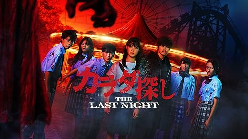

Karada Sagashi: The Last Night (2025)
カラダ探し THE LAST NIGHT

Pada tengah malam, hari yang sama akan terus berulang sampai seluruh bagian tubuh ditemukan. Setelah Asuka dan Takahiro menyelesaikan pencarian tubuh, Asuka menghilang dari dunia tepat di hadapan Takahiro
3 tahun kemudian Rikuto dan 5 temannya terbangun di taman bermain pada tengah malam. Perempuan yang berlumuran darah yang disebut sosok merah muncul dan membunuh mereka. Entah bagaimana mereka terbangun di pagi hari yang sama. Rikuto dan teman-temannya menyadari mereka telah berpartisipasi dalam pencarian tubuh.
Lalu Takahiro muncul di hadapan mereka. ia tampak berbeda dengan yang dulu. Takahiro telah mencari selama 3 tahun, Asuka, wanita yang ia cintai. Mereka berenam harus menghadapi teror dari sosok merah dan menyelamatkan Asuka dari rantai kutukan.